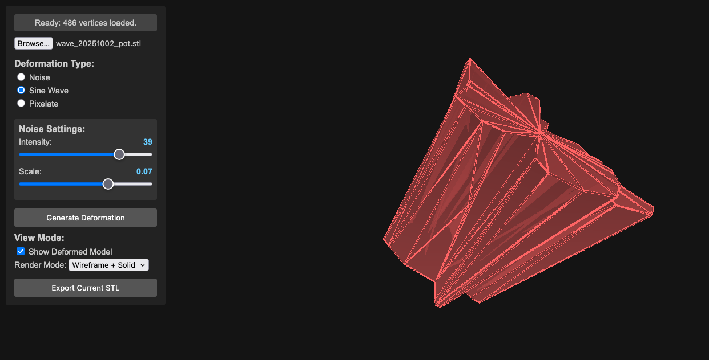
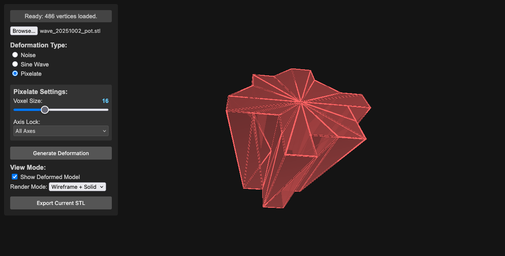

STLShaper by ToledoEM

This project is under constant development.
STLShaper loads STL files and applies mathematical deformations in real-time: noise, sine waves, pixelation, inverse distance weighting, and topology-altering methods like tessellation and Menger sponges. You adjust parameters and export the result. The point is to make your models deliberately weird—unsettling, beautiful, broken.
Use deformation to explore how a single object changes under different mathematical rules. What does your model look like if you apply noise? Sine waves? A Menger sponge carved through it? Save the weird ones.
Motivation & Creative Exploration
- Subversion of Form: This project isn’t about perfect realism. It’s about deliberately distorting the familiar, creating unsettling or intriguing shapes.
- Algorithmic Abstraction: Noise, sine waves, and inverse distance weighting deform geometry in predictable and chaotic ways. Noise breaks regularity. Sine waves ripple across surfaces. IDW bends space around control points.
- Visual Metaphors: Consider how different deformations might represent abstract concepts – chaos, tension, growth, decay.
Features
- STL Loading: Loads STL files using the Three.js STLLoader. (Start with simple objects – boxes, spheres, basic shapes – to get the basics working).
- Deformation Effects:
- Noise: Applies a noise-based deformation, introducing chaotic movement and distortion.
- Sine Wave: Displaces vertices along a sine curve, creating rhythmic ripples across the model.
- Pixelate: Pixelates the model by snapping vertices to a grid, offering a stark, fragmented aesthetic.
- IDW Shepard: Multiple control points scattered through the model’s interior. Each vertex moves based on distance to those points—closer points pull harder.
- Inflate / Twist / Bend / Ripple / Warp / Hyperbolic Stretch: A suite of expressive surface operators. Inflate swells outward by distance from center, Twist rotates along a chosen axis, Bend arcs the mesh over a controllable range, Ripple adds wave-like undulation, Warp introduces spatial noise-based offsets, and Hyperbolic Stretch exaggerates form along an axis for elastic, pulled silhouettes.
- Perspective Distortion: Projects geometry through a configurable vanishing point. An interactive canvas widget lets you drag a dot to set the distortion direction; the center means no effect. Supports 1-point and 2-point modes (second orange dot adds an independent vanishing point), a plane selector (XY / XZ / YZ) to map widget axes to model space, linear and exponential falloff modes, and touch input on mobile.
- Tessellate / Boundary Disruption / Menger Sponge: Topology-oriented transformations. Tessellate subdivides triangles to add geometric density, Boundary Disruption jitters near edges for torn or frayed contours, and Menger Sponge carves repeating voids for porous, lattice-like structures.
- Real-time Deformation: Updates the deformation in real-time, allowing for interactive experimentation.
- Parameter Controls: Interactive sliders and checkboxes for adjusting deformation parameters.
- Adaptive Parameter Ranges: Parameters automatically scale based on model size to ensure consistent effects across different STL scales.
- Visual Feedback: Displays the deformed model in 3D space with control point visualization for IDW deformation.
- Axis Gizmo: On-screen X/Y/Z labels for orientation.
- Multi-Axis Selection: Axis-based deformations (twist, bend, ripple, hyper) can target multiple axes.
- Parallel Processing: Uses Web Workers for efficient processing of large STL files with thousands of vertices.
- Preprocess Options: Optional cleanup before deformation. Decimate keeps a percentage of triangles (faster but less detail), and Vertex Merge collapses near-identical vertices within an epsilon (reduces duplicates and can stabilize deformations). Not required for most models, but helpful for very dense STLs or when you need faster iteration.
- Import/Export Settings: Reuse deformation presets across STLs; exported settings include preprocess parameters.
- Stats HUD: Displays vertex/triangle counts and deformation time.
- Export: Exports the deformed model as an STL file – save your weird creations!
Deformation Examples




Pixelated Deformation
IDW Shepard Deformation
Control points pull vertices based on distance. Closer points pull harder. The result: smooth, organic bending without the grid-like feel of axis-based or noise-driven methods.
Key Features
- Poisson Disk Sampling: Evenly distributed control points to prevent clustering
- Volume-Constrained Placement: Points are guaranteed inside the mesh volume
- Seed-Based Generation: Deterministic point placement for reproducible results
- Manual Control Points: Optional manual list of points (single or multi-point)
- Sampling Rays Control: Adjustable inside-mesh sampling for speed/robustness
- Adaptive Influence: Inverse distance weighting with customizable power falloff
- Visual Feedback: Wireframe spheres show control point positions and influence
- Scalable Effects: Parameter ranges scale to model size for consistent output
Technical Implementation
- Multi-Point IDW: Each vertex is influenced by all control points
- Parallel Processing: Web Workers handle heavy computation for large meshes
- Real-time Visualization: Control points scale with model size (5% of largest dimension)
- Robust Volume Detection: Advanced ray casting ensures points are truly inside the mesh
Perspective Distortion
Perspective Distortion simulates the geometric projection of a vanishing point applied directly to mesh vertices — not a camera trick, but an actual vertex transformation.
Key Features
- Interactive canvas widget: Drag a dot inside a circle; dot position = stretch direction, center = no effect
- 1-point mode: Single vanishing point for classic perspective exaggeration
- 2-point mode: Second orange dot adds an independent vanishing point for complex projections
- Plane selector: XY / XZ / YZ maps the 2D widget axes to the correct model-space plane
- Falloff modes: Linear (uniform gradient) or Exponential (strong near vanishing point, soft far away)
- Touch support: Works on mobile and tablet
Requirements
- Modern web browser with Web Worker support (Chrome 4+, Firefox 3.5+, Safari 4+, Edge)
- JavaScript ES6+ features supported by your browser
- Three.js r121 (bundled)
- FileSaver.js (included)
- Web Workers (required for parallel processing of large deformations)
Run Options
- Run locally: Clone the repository and open
index.htmlin a modern browser. - Run online: Open the hosted version at https://toledoem.github.io/stlshaper/.
Setup
- Place all files (
index.html,main.js, libraries) in a directory. - Open
index.htmlin your web browser.
Usage
- Load STL: Click the “File Input” button to select an STL file.
- Deformation Type: Choose the deformation type from the radio buttons (Noise, Sine Wave, Pixelate, IDW Shepard, etc.).
- Adjust Parameters: Use the sliders and inputs to control the deformation parameters. IDW parameters adapt automatically to model size.
- Generate Deformation: Click the “Generate Deformation” button.
- Visualize: The deformed model will be displayed in the 3D view.
- Export (Optional): Click the “Export Current STL” button to save the deformed model as an STL file.
Controls
- File Input: Select an STL file.
- Radio Buttons: Choose the deformation effect.
- Sliders: Adjust the parameters of the chosen effect.
Noise Controls
- Intensity: Controls the strength of the noise deformation (0.1 - 5.0)
- Scale: Controls the frequency/size of noise features (0.005 - 0.5)
- Axis: Choose which axes to apply noise to (All, X, Y, Z, or combinations)
Sine Wave Controls
- Amplitude: Controls the height of the sine waves (1 - 100)
- Frequency: Controls how many waves fit in the model (0.01 - 0.2)
- Driver Axis: Which axis provides the input to the sine function (X, Y, Z)
- Displacement Axis: Which axes the sine wave displaces (X, Y, Z, or combinations)
Pixelate Controls
- Voxel Size: Size of the pixelation grid (0.5 - 50)
- Axis Lock: Which axes to pixelate (All, X, Y, Z, or combinations)
IDW Shepard Controls
- Number of Points: How many control points to generate (3 - 50)
- Seed: Numeric seed for reproducible control point placement (0 - 10000)
- Weight: Strength of attraction/repulsion at control points (adaptive range by model size)
- Power: Influence falloff with distance (0.5 - 6.0)
- Global Scale: Overall deformation scaling (adaptive range by model size)
- Generate Deformation: Apply the deformation.
- Export Current STL: Export the deformed model.
Perspective Distortion Controls
- Canvas widget: Drag dot to set vanishing point direction and magnitude
- Mode: 1-point or 2-point
- Plane: XY / XZ / YZ
- Strength: Overall distortion magnitude
- Falloff: Linear or Exponential
Code Structure
index.html: The main HTML file that sets up the Three.js scene, UI elements, and event listeners.main.js: Core logic for loading the STL, applying deformation, rendering, and UI. Includes Poisson disk sampling, volume detection, and adaptive parameter scaling.worker.js: Web Worker for parallel processing of vertex deformations (especially IDW).libraries/: Three.js, FileSaver.js, and other required libraries.
Important Notes
- The performance depends on the complexity of the STL model and chosen deformation algorithm
- The rendering process can be slow with complex models
- Web Workers improve responsiveness for large meshes and multi-point IDW
After deformation, you may need to repair the mesh in Meshlab. Use these filters:
- Filters -> Cleaning and Repairing
- Remove Zero Area Faces (twice)
- Repair Non-manifold Edges (split)
Notes
- IDW Shepard deformation works best with solid, manifold meshes. Complex or thin-walled models may produce unexpected results.
- Some STLs may require normal regeneration to avoid black/incorrect shading (handled in recent builds).
Changelog
0.8.0 (2026-05-01)
- Exposed global scene, camera, and renderer for browser console access
- Improved UI/GUI with enhanced styling and layout refinements
- Canvas widget layout and interaction improvements
- Documentation rendering and organization
0.7.0 (2026-04-21)
- Added Perspective Distortion deformation with interactive vanishing-point picker widget
- Circle canvas widget with draggable dot to set distortion direction; center = no effect
- 1-point and 2-point mode: second orange dot adds independent vanishing point
- Plane selector (XY / XZ / YZ) maps widget axes to model space
- Linear and exponential falloff modes
- Touch support for the canvas widget
0.6.0 (2026-02-10)
- Added importable deformation settings to reuse presets across STLs
- Added on-screen axis gizmo with X/Y/Z labels
- Added multi-axis selection for axis-based deformations (twist, bend, ripple, hyper)
- Improved Menger sponge, tessellation range, settings export, and UI/camera performance
- Fixed shading issues by ensuring valid vertex normals, plus assorted robustness fixes
0.5.0 (2026-02-08)
- Updated GUI and camera behavior
- Fixed P0, P1, P3, and P4 issue sets
0.4.0 (2025-10-28)
- Added settings workflow groundwork and Web Worker processing
- General refinements and cleanup
0.3.0 (2025-10-27)
- Initial autoloader workflow
0.2.0 (2025-10-06)
- Bug fixes and iterative improvements
0.1.0 (2025-10-04)
- Initial project scaffold and documentation
Contributing
Feel free to contribute to this project! You can:
- Submit bug reports
- Suggest feature requests
- Create pull requests
License & Attributions
STLShaper is released under the MIT License.
Third-Party Libraries & Resources
- Three.js (v0.121.1) – MIT License
- 3D graphics library for WebGL rendering
- Bootstrap Icons – MIT License
- Icon library for UI elements (box-arrow-down, box-arrow-in-down, filetype-json, balloon icons)
- FileSaver.js – MIT License
- Client-side file download functionality for STL exports
Sample STL Models
Sample 3D models used for testing and demonstration are sourced from:
- NIH 3D Print Exchange – Public Domain
- Freely available biomedical 3D models for non-commercial use and research
Attribution
Built by Enrique Toledo (@ToledoEM)
Disclaimer: This tool is provided as-is for experimental and educational purposes.